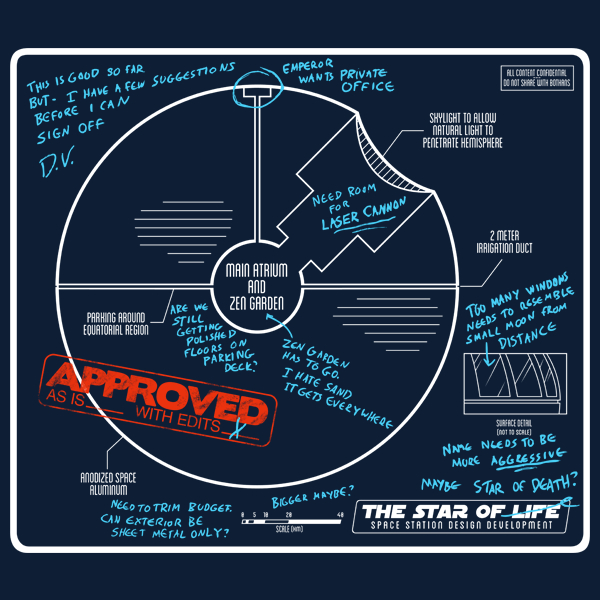
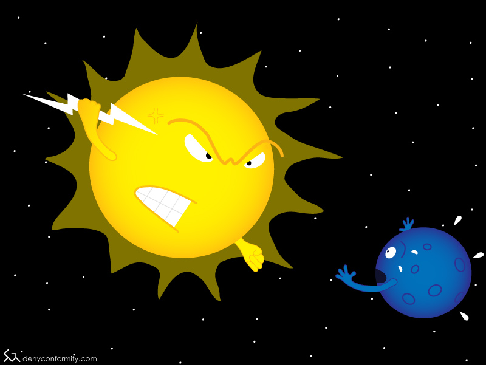

The Website All About This Website!
The Most Meta Website on this Website.
First off, congratulations on getting this far. That's pretty neat just in itself. Go ahead, pat yourself on the back.

Okay, enough of that. We have work to do.
You'll notice that there are links all up on the left side there. That's the navigation for this super cool website. The links don't work, though! HALP
CHALLENGE ONE, Page navigation using the DOM:
I have a function in my javascript that will show a content block if you pass it the ID of that block. For example, showBlock("home") will show this content block. How do I get the links to actually call that function when the user clicks on them?
CHALLENGE TWO, Highlighting the button:
I created a class, .active which will make the current button highlighted when that item is open (the first item is set up by default). When you click on other buttons, it needs to remove the .active class from the old button and add it to the new one. I can probably adapt the code I have for changing the visible content . . . somehow . . .
CHALLENGE THREE, Button hovers:
I want the menu buttons to change color when you put the mouse over them. I created a class, .hover which does that, but I don't know how to actually make the links have that class. I think jQuery could probably help with this, couldn't it?
CHALLENGE FOUR, Install a jQuery Plugin:
I found this really great jQuery plugin for showing tooltips on the page. I think a genius made it, or at least somebody really super handsome. I downloaded all the files that you'll need to use it, and put them in the lib/tooltip folder, but I don't know how to load them into jQuery. Check the documentation for the plugin and see what files need to be included.
CHALLENGE FIVE, Use a jQuery Plugin:
All of those navigation links up on the left there have "title" attributes. That kind of looks dumb, so I want to use that amazing tooltip plugin that we installed. How do I make it so putting the mouse over those links will show a fancy tooltip instead of just the default?
CHALLENGE SIX, jQuery Plugin options:
I kind of don't like when the tooltips show up immediately. Can you make it so they show up after one second?
BONUS CHALLENGE, Vanilla vs. jQuery:
I used vanilla Javascript to handle the navigation of my awesome website. I know it would probably be easier to do that with jQuery, but I just can't figure out how.
All about me! I am the greatest. I created this website. This website is all about this website, which makes it the best this-website-based website on this website. If you know of a better website about this website, please send it to me so I can find the person who made that website and beat them up. Just kidding, I would never beat somebody up. I have weak arms and a generally cowardly disposition. I would probably just yell something at them and then run away. Seriously, though, there's nothing they could do to stop me. I'm not saying I'm a tactical genius but it's essentially a fool-proof plan that could not possibly ever be foiled.


Post number one:
I am mad about a thing. Grr!
Post number two:
I disagree with someone's personal opinion. Grr!
Post number three:
I am going to go out of my way to treat a really popular opinion as if it were something only I have ever thought of.
Post number four:
Something about Stranger Things.
Post number five:
Uh oh, I'm mad about another thing. Grr!
Were this a real website, I would have some sort of super cool contact form here. Instead, I'll just throw in this picture I drew of the Sun really giving it to that upstart Pluto.
